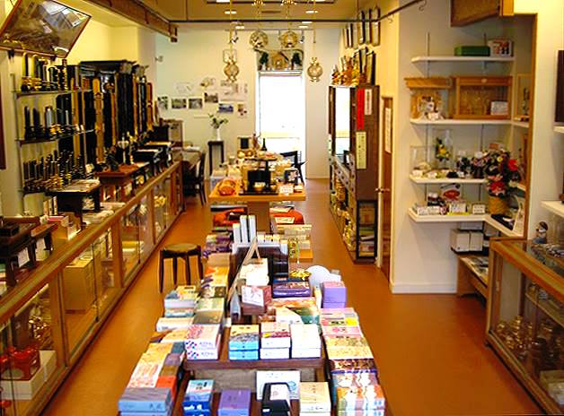
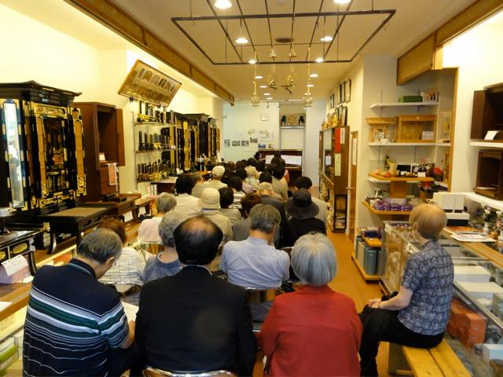

- トップページ
- 片桐仏壇店
- 音楽・文化
- ガーデニングデザイン
- 体験工房

片桐仏壇店は仏具、神具のお店です。
併設の工房では伝統の小樽仏壇の製造も行うと同時に、寺院施設の設計施工も行っており、道内各地の寺院を手がけております。
またこの技能を活かし、社寺境内や、さらには伝統文化をまちづくり・デザインに活用するコンサルティングも行っております。
お線香やロウソクなど日常にお使いの仏具の販売から、各宗派の儀礼作法や家相に合わせた仏具、神棚の設置など、お気軽にご相談にください。
駐車場もございます。

定期的にコンサートも開催しています。